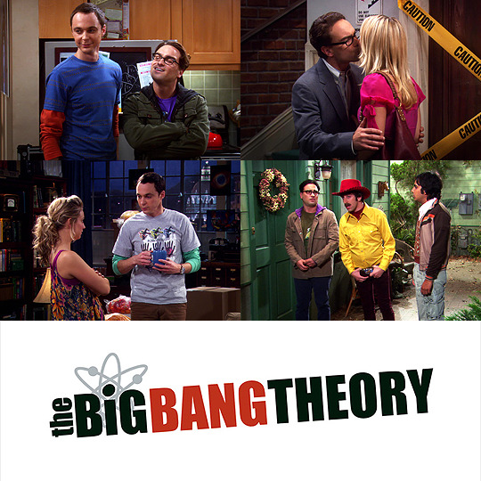
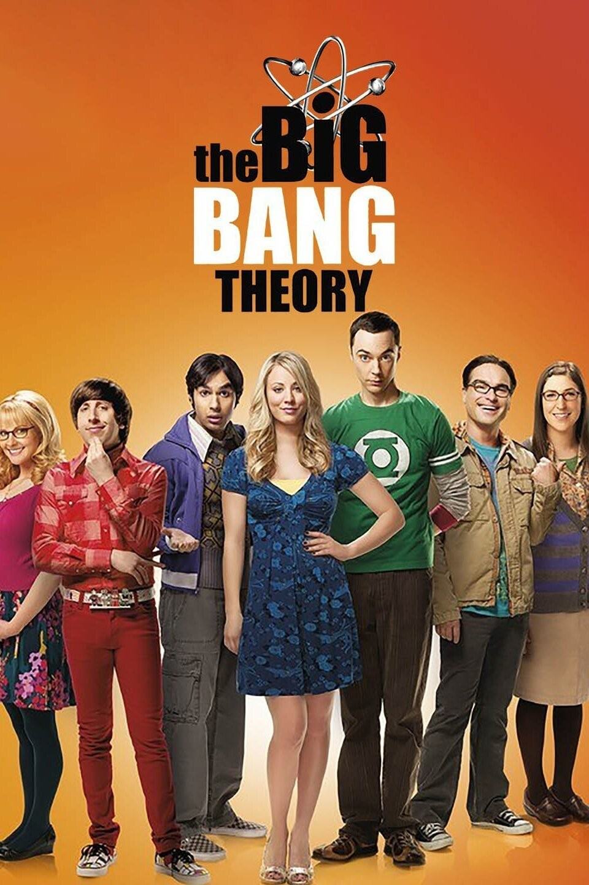
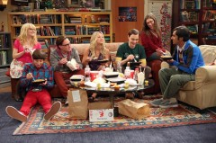

Introduction
The Big Bang Theory is a sitcom that aired from 2007 to 2019, spanning 12 seasons and 279 episodes. The show follows a group of highly intelligent but socially awkward scientists as they navigate friendships, relationships, and geek culture. Blending science, pop culture, and humor, the show became one of the most iconic sitcoms of its time, making nerdy topics relatable to a broad audience. With its mix of intellectual debates, awkward social interactions, and hilarious misunderstandings, The Big Bang Theory struck a perfect balance between scientific accuracy and comedy. It introduced mainstream audiences to real-world physics concepts, popularized catchphrases like "Bazinga!", and created some of the most memorable sitcom characters in recent history.
Geek Culture
A defining aspect of the show is its celebration of nerd culture, with characters deeply immersed in comic books, video games, and science fiction. They engage in heated Marvel vs. DC debates, make weekly trips to Stuart’s comic book store, and attend Comic-Con in elaborate cosplay. Star Trek, Star Wars, and Doctor Who references are frequent, with Sheldon idolizing Spock and regularly using the Vulcan salute. The show also introduces nerdy logic-based humor, most notably with "Rock, Paper, Scissors, Lizard, Spock," a variation of the classic game designed to reduce ties. Their weekly Dungeons & Dragons campaigns, intense video game nights, and scientific debates reflect their deep-rooted geek culture. These elements helped bring nerd humor into mainstream entertainment, making what was once considered niche culture widely relatable.
Reviews, Legacy & Spin-offs
With its blend of intellectual humor and pop culture references, The Big Bang Theory achieved both critical and commercial success. It consistently ranked within the top 10 highest-rated shows for seven seasons and peaked at No. 1 in its eleventh season. Beyond its Emmy wins, Jim Parsons also won a Golden Globe for Best Actor in a Comedy Series in 2011. The show’s impact extended beyond television, launching a multimedia franchise. A prequel series, Young Sheldon (2017-2024), explored Sheldon Cooper’s childhood, with Parsons narrating as adult Sheldon. In 2024, a sequel series, Georgie & Mandy’s First Marriage, debuted, following Sheldon’s older brother. Another spin-off featuring Stuart, Denise, and Bert Kibbler is currently in development for Max. Despite its criticism for relying on stereotypes, The Big Bang Theory remains one of the most influential sitcoms, leaving a lasting mark on pop culture.